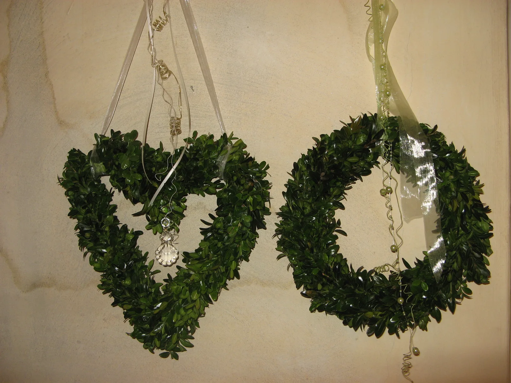

01
Kränze binden
Tür- und Tischkränze, Adventskränze oder Haarkränze: Entdecken Sie unterschiedliche Techniken und saisonale Ideen.
Kurs anfragenWorkshops bei Bierbach
Blumen in der Hand, gute Gesellschaft und etwas selbst Geschaffenes: kreative Stunden für Freunde, Familien und Teams.

01
Tür- und Tischkränze, Adventskränze oder Haarkränze: Entdecken Sie unterschiedliche Techniken und saisonale Ideen.
Kurs anfragen02
Locker, wild oder kompakt. Lernen Sie, wie aus einzelnen Blumen ein persönlicher Strauß entsteht.
Kurs anfragen03
Eigene Ideen ausprobieren, Materialien kombinieren und besondere Ecken liebevoll in Szene setzen.
Kurs anfragenOb Freundeskreis, Familie, Junggesellinnenabschied oder Firmenevent: Nennen Sie uns Ihr Wunschthema, die Gruppengröße und einen Terminwunsch.
Termine, Materialien, Dauer und Preise stimmen wir persönlich mit Ihnen ab.
Wunschtermin besprechenPersönlich. Individuell. Mit Liebe.
Erzählen Sie uns von Ihrem Anlass. Gemeinsam finden wir die passenden Blumen.
Lassen Sie uns sprechen